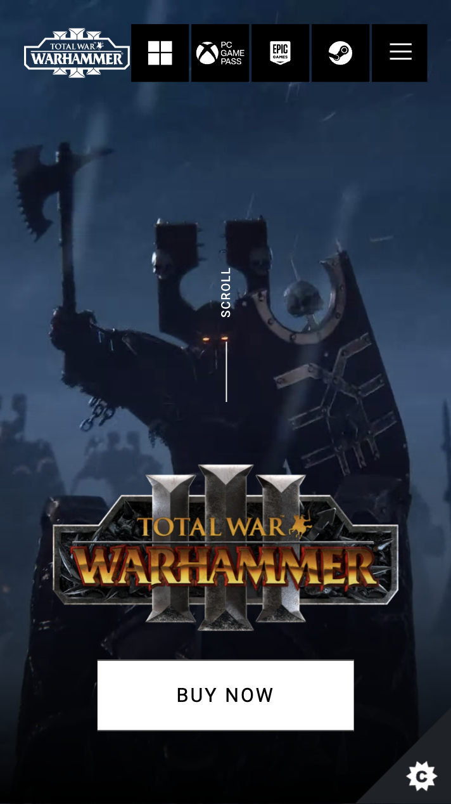

Proximity
Malwarebytes
https://www.malwarebytes.com/
I think the design that Malwarebytes uses here is a great example of the proximity principle.
I really like how they seperated the personal and buisness plans. The colors used in both of the plans help viewers to quickly see the difference between the two types of plans. Additionally, I like how they placed these plans in proximity with the other elements on the page. There is a blue boxed area at the top of the page and I like how they included all of the personal plans within that blue box and put the buisness plans on the outside of that box. I think it helps to create a visual division between the two plans.
Hick's Law
Sega
https://warhammer3.totalwar.com/
The simplicity and organization of buttons and options in this website makes it a great example of hick's law in my opinion. On the very top of the first page, a list of supported platforms are presented at the top so you users can quickly grab the copy of the game that meets their requirements.
I also really like how they made the "BUY NOW" button the largest button on the page and made it clearly visible. Total War: Warhammer is probably the greatest game ever made so it only makes sense to make the buy botton super visible so future players can quickly access the game.
Visual Hierarchy
Brandon Sanderson
https://www.brandonsanderson.com/
Apart from being the worlds greatest author this world has ever known, Brandon Sanderson also has good taste in design. I think the visual hierarchy on this page is pretty spot on and it helps viewers to get to the content that they are looking for very quickly.
The top menu and search bar are obviously clearly visible and easily accessible which helps user to manuver quickly. I love the gallery underneath that presents all of the big updates and project that he is working on. The images cover the whole width and makes it nice and big for viewers. The page then goes on to display project progress in a simple and visually appealing way and imform fans of updates.